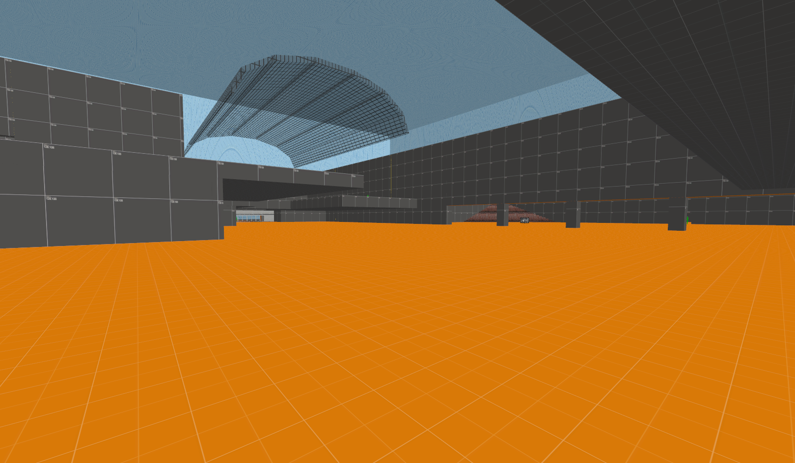
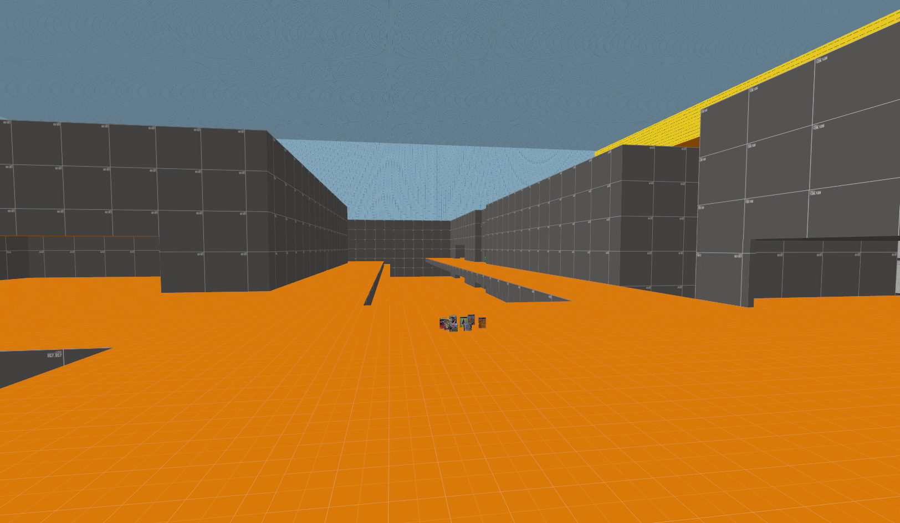
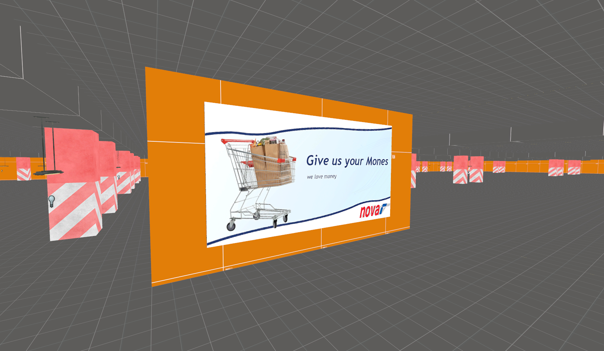
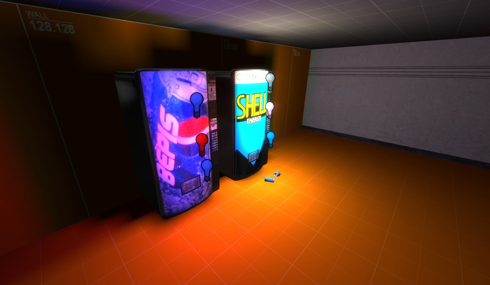
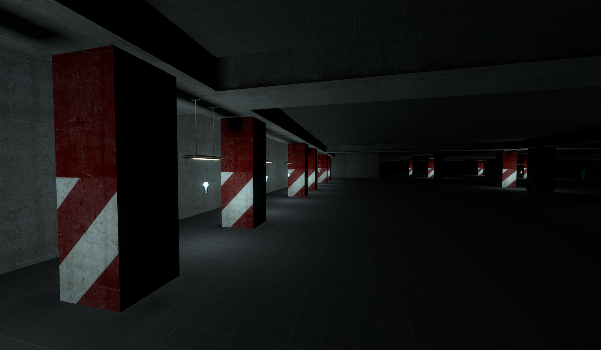
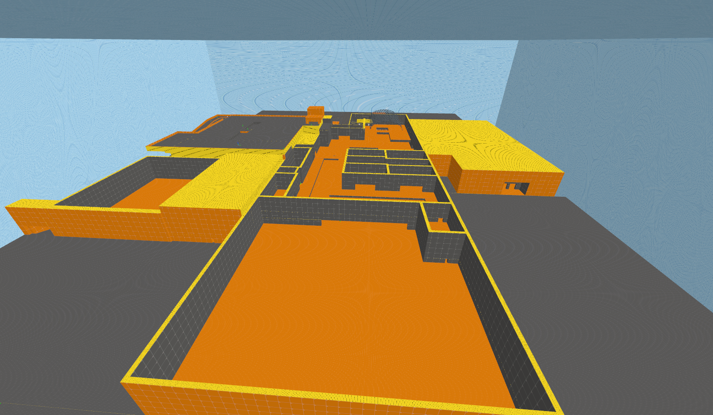

I am currently working on an English translation for the N64 Disk Drive game "Kyojin no Doshin Kaihō
Sensen Chibikko Chikko Daishūgō" also referred to as Doshin the Giant Expansion Pack or Doshin the Giant
2.
It's an expansion to the game Doshin the Giant (also known as "Kyojin no Doshin") where you play as a
Giant named Doshin who helps villagers on an island called Barudo to build houses, farms and monuments.
In the sequel however, you play as a toddler, trying to help Doshin escape from his prison at EXPO 96 by
building pavilions based on the monuments built by the villagers in the original game and by teaming up
with other toddlers which start to appear at the EXPO the more pavilions you build.
Building these pavilions rewards the player with a movie clip of a show called "More than Giant" which
goes into the history of Doshin and Barudo Island, i guess?
After building a few pavilions using the Doshin 1 disk, the player will be able to recruit other toddlers
which assist the player when rescuing Doshin.
The goal of the game is to... *ahem* piss hearts onto Doshin to make him grow in size until he can
break free from his cage... yeaaaa.
This game is weird as fuck! And even though this game is super weird and definitely not the best game the
N64 and 64DD had to offer, i still want players who are interested in this game to be able to play this
game in English since this game is quite text-heavy.
To be honest i haven't been working on this project all too much in the past months as i was busy with a
few other things, so the translation still mostly resembles the one seen in my showcase video. HOWEVER!
If i have the time and i am in the right mood, i will continue to work on this translation!
...i'm not the right man for this job, am i?
Current Progress
as of 15.12.2024
Textures: Mostly done! Some textures still need some
touch ups!
"More Than Giant" Movies: Not started yet. All i
know so far is that the Movies are stored in the HVQM 1.0 format. It's based on Vector quantization,
which is also used by video codecs such as Bink Video developed by Epic Games. The file header for
the HVQM format can be found in the official N64 SDK
Textboxes: I have absolutely no idea what
i am doing am i even quallified for this job 💀
Toddler Voice Lines: I... i don't have to do the
Toddler voices... do i? god this will be embarrising...
gm_mall_after_hours (Working title probably)
IN ACTIVE DEVELOPMENT! MAP AND ASSETS SHOWN HERE ARE NOT FINALIZED AND ARE SUBJECT TO CHANGE!
A map for Garry's Mod set in a shopping mall at nighttime
1 / 6

An early version of the mall's shopping floor. (feat. no freaking roof!)
2 / 6

Early version of the upper floor. (feat. custom models of video game cases for some reason)
3 / 6

It's a Billboard !! In an *yet aagain* early version of an underground car park !!
4 / 6

Vending Machines :] (bepis)
5 / 6

Playing around with lighting inside the car park
6 / 6

Overhead view of the 𝓼𝓽𝓲𝓵𝓵 𝓮𝓪𝓻𝓵𝔂 𝓲𝓷 𝓭𝓮𝓿𝓮𝓵𝓸𝓹𝓶𝓮𝓷𝓽 mall.
For the past 1.5 Years i have been working on a Garry's Mod map set inside a shopping mall right after closing time. Now, you may be asking yourself: "Miles, what the actual fuck?! Why does this Map still look so unfinished after 1.5 Years?!"
"Is it because you are slow as balls?" Yes.
"Is it because you went through hundreds of design changes and always scraped precious hours of work?" Yes.
"Is it because you always lost motivation due to you scrapping a lot of your work?" Yes.
"Is it because Hammer is a peice of crap software no normal human being can use for long durations of hours without going insane?" Also, Yes. Actually i use Hammer ++ made by ficool2 which makes mapping way easier and fixes a lot of bugs OG Hammer has, but Source Modding still can be a pain in the Ass.
Although i finally have made some progress with a map layout i am happy with, as you can see by the screenshots, this map is still early in development and since i am the only person working on this map i can't tell yet when this map will be finished. I will keep everyone updated as development on this map continues!